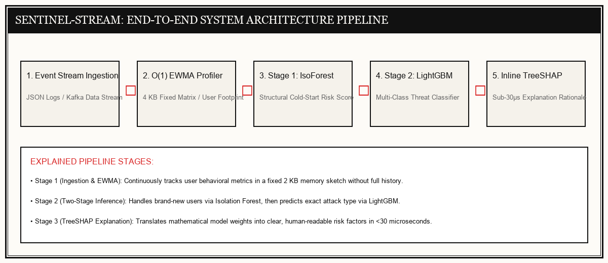

DISPATCH A — RESEARCH & SYSTEM BUILD
Sentinel-Stream
O(1)-Memory Streaming Anomaly Detection Engine for Real-Time Enterprise UEBA
Memory Bottlenecks Under High Volume
Enterprise Security Operations Centers (SOCs) process tens of millions of audit events daily. Conventional User and Entity Behavior Analytics (UEBA) tools store raw historical log arrays per user, causing memory consumption to grow linearly $O(N)$ and triggering server out-of-memory (OOM) crashes during traffic spikes.
Fixed $O(1)$ Memory Profiling
Sentinel-Stream replaces raw event arrays with Exponentially Weighted Moving Averages (EWMA) and Count-Min Sketch tables ($4 ext{ KB}$ fixed matrix), bounding memory per user to just 2 KB of RAM. It detects anomalous behavior in under 2.64 milliseconds while providing immediate TreeSHAP feature explanations.
2.64 ms
~2 KB
0.9403
24.6×
O(1) Streaming Profiler & Machine Learning Pipeline

Live UEBA Threat Inspection Workbench
Select an enterprise threat scenario to observe real-time anomaly classification, latency metrics, and feature attributions:
| Timestamp | User Account | Observed Event | Threat Level | Latency | Detection Rationale |
|---|---|---|---|---|---|
| 18:36:01 | sarah_marketing | Opened standard project documents | SAFE (NOMINAL) | 1.42 ms | Activity matches normal daily baseline behavior. |